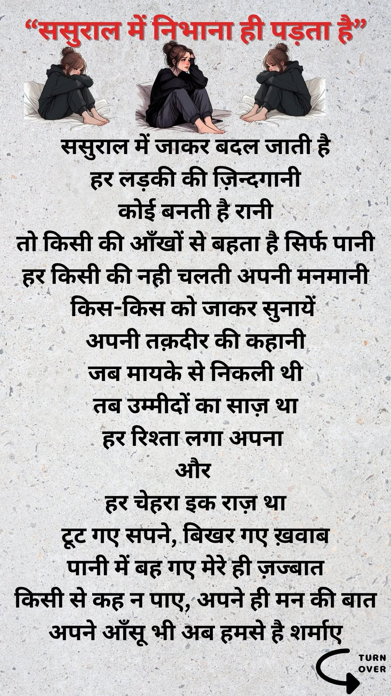
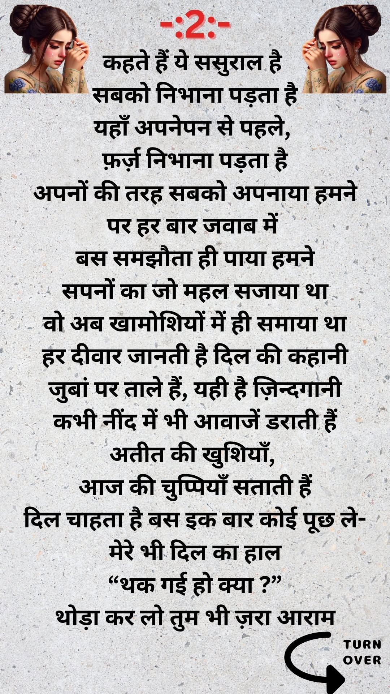
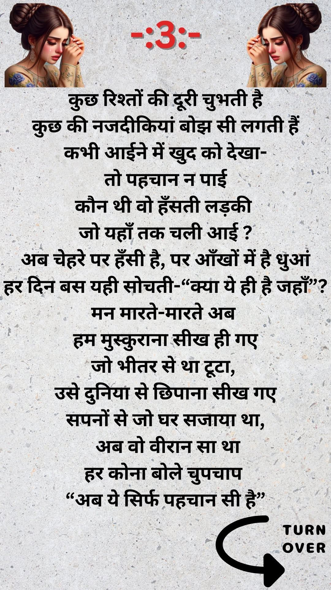
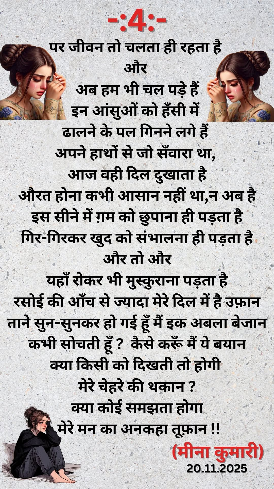

ससुराल में निभाना ही पड़ता है
This poem is in Hindi, as Meena Kumari wrote it.




The poem as text
ससुराल में जाकर बदल जाती है
हर लड़की की ज़िन्दगानी
कोई बनती है रानी
तो किसी की आँखों से बहता है सिर्फ पानी
हर किसी की नही चलती अपनी मनमानी
किस-किस को जाकर सुनायें
अपनी तक़दीर की कहानी
जब मायके से निकली थी
तब उम्मीदों का साज़ था
हर रिश्ता लगा अपना
और
हर चेहरा इक राज़ था
टूट गए सपने, बिखर गए ख़वाब
पानी में बह गए मेरे ही ज़ज्बात
किसी से कह न पाए, अपने ही मन की बात
अपने आँसू भी अब हमसे है शर्माए
कहते हैं ये ससुराल है
सबको निभाना पड़ता है
यहाँ अपनेपन से पहले,
फ़र्ज़ निभाना पड़ता है
अपनों की तरह सबको अपनाया हमने
पर हर बार जवाब में
बस समझौता ही पाया हमने
सपनों का जो महल सजाया था
वो अब खामोशियों में ही समाया था
हर दीवार जानती है दिल की कहानी
जुबां पर ताले हैं, यही है ज़िन्दगानी
कभी नींद में भी आवाजें डराती हैं
अतीत की खुशियाँ,
आज की चुप्पियाँ सताती हैं
दिल चाहता है बस इक बार कोई पूछ ले-
मेरे भी दिल का हाल
“थक गई हो क्या ?”
थोड़ा कर लो तुम भी ज़रा आराम
कुछ रिश्तों की दूरी चुभती है
कुछ की नजदीकियां बोझ सी लगती हैं
कभी आईने में खुद को देखा-
तो पहचान न पाई
कौन थी वो हँसती लड़की
जो यहाँ तक चली आई ?
अब चेहरे पर हँसी है, पर आँखों में है धुआं
हर दिन बस यही सोचती-“क्या ये ही है जहाँ”?
मन मारते-मारते अब
हम मुस्कुराना सीख ही गए
जो भीतर से था टूटा,
उसे दुनिया से छिपाना सीख गए
सपनों से जो घर सजाया था,
अब वो वीरान सा था
हर कोना बोले चुपचाप
“अब ये सिर्फ पहचान सी है”
पर जीवन तो चलता ही रहता है
और
अब हम भी चल पड़े हैं
इन आंसुओं को हँसी में
ढालने के पल गिनने लगे हैं
अपने हाथों से जो सँवारा था,
आज वही दिल दुखाता है
औरत होना कभी आसान नहीं था,न अब है
इस सीने में ग़म को छुपाना ही पड़ता है
गिर-गिरकर खुद को संभालना ही पड़ता है
और तो और
यहाँ रोकर भी मुस्कुराना पड़ता है
रसोई की आँच से ज्यादा मेरे दिल में है उफ़ान
ताने सुन-सुनकर हो गई हूँ मैं इक अबला बेजान
कभी सोचती हूँ ? कैसे करूँ मैं ये बयान
क्या किसी को दिखती तो होगी
मेरे चेहरे की थकान ?
क्या कोई समझता होगा
मेरे मन का अनकहा तूफ़ान !!